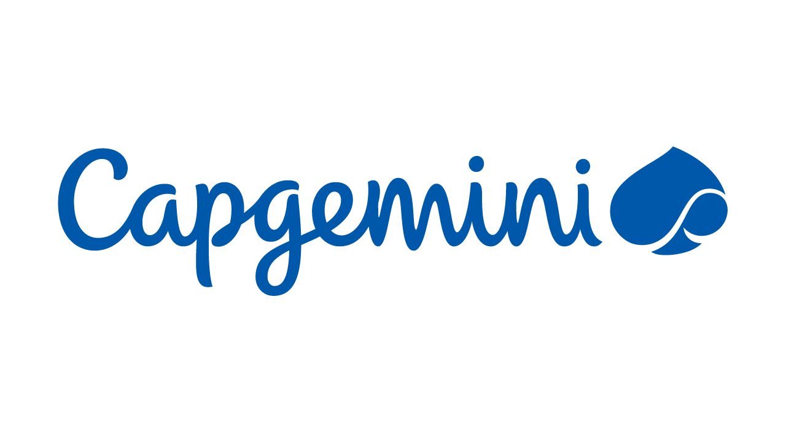

Pizza & Pull Requests - September 2026

The Craft of Software Development - Kevin McKelvin
Kevin is CTO at Resource Guru, they build software that helps teams manage their time, their customers are from small agencies to multi nationals and have eight programmers and they are shipping. They have shipped fourteen new features in two quarters and in a codebase that is fourteen years old and can ship features at a small rate.
They approach software development as a craft, the definition of which is building by hand, well known crafts include carpenters and others. There is an overlap with art which is expression or application of human creative skill. They are creating and shaping their codebase and if creating something novel it is creative. A programmer who subconsciously views themselves as an artist will enjoy what they do and will do it better. People who take pride in their work enjoy their work more.
But isn't it engineering? Software engineering came from 1968 where there was a NATO conference on this, they struggle to see the day to day overlap with an engineer who designs a bridge or a car. Engineering is you calculate and you build, the constraints are known, the cost of change is high so you get it right up front. Craft is you build to find out, the material teaches you as you work and the spec moves, the cost of change is low you iterate every piece is a one-off, skill and judgement determine quality of outcome.
Programming is not about building software, it is about designing software, engineering software has two distinct activities which is design where can produce an unambiguous document which is a spec, drawings and diagrams. In software what is the design document, could it be an architecture diagram, UML diagrams, but you only unambiguous detail when building software is the code. Work is done by compilers and distribution is with automation. Manufacturing is an expensive phase but we can do this easily with push to GitHub or others. The design phase is when the craft can really apply.
Rigour from engineering, judgement from craft, joy from art - you get to take pride from it and joy from it. It takes tremendous amount of practice to become good at a craft, it takes thousands of hours to get good at it. A professional practices before they perform, musicians rehearse - what would happen if they went up on stage without practicing. What is our version of this in software development is the Kata, a term from martial arts which is to hone your skills through practice and repetition, this helps you build quality and you take the skills you develop and you bring that to your day to day work.
A crafter follows the disciplines of their trade, such as test driven development, AI is changing the way we look at things, TDD has been one of the core disciplines in software craftsmanship, you start at red and have a test that fails because the code doesn't exist, then you get it to pass and you meet this expectation without over extending beyond what test expects, you then refactor to improve the shape and design if it is taking too long you're taking too much of a step. They don't work like this anymore, things have changed and agents have become a thing so the loop.
The loop now is specify what you want built, define what right looks like so it is able to work towards that target, then you let it iterate where the agent writes code and runs tests and applies skills and does self-review of the code and then review to see how it matches with rest of the code style and that you want to put your name to it and pass it on and if it is not quite right you refine the spec and go again, you still define what is red, then green then review with test driven development is still there, the principles are still there but the shape is different. They could do a Kata in an evening but now an agent can do this in minutes.
Review is now the main event, as AI it is able to work much faster and generating code is cheap and you have to apply your taste to the review stage. The craft is still judgement, taste and ownership where you are willing to pass on code to a colleague. Lazy work used to mean too little output but now with agents that are able to produce quite a lot that you can produce a lot of unchecked work which is slop grenades for your colleagues - don't produce these for your colleagues.
A crafter continuously hones their skills, give the agents a go like Astra and Fable and you need to give it a go and is massively transforming what can be done, if a phone developer build a web app, if only worked in low level when work in C or C++ and learn from it and hone your skills, A crafter keeps up to date with industry practice. They are using tools, methods and practices that didn't exist when they started, whatever you build now it will be different so keep up to date with what is happening and take inspiration from other professionals, see what codes of practices apply and what could be used. A crafter collaborates with other crafters.
Web Performance Time to First Pizza - Ian Duffy
Ian works at Jet2Holidays as a web performance engineer and have been working in web development for ten years. Imagine you are at a pizza place, think about the time between getting menu and interactions to getting your pizza. Web performance looks at speed, responsiveness and stability on the web. 100 Lighthouse !== Perfect Performance as it is a lab test and not a real experience and won't go through screens such as booking process and chasing Lighthouse points makes them make decisions that can harm experience such as loading JS later.
Core web vitals which is Largest Contentful Paint which is how soon user sees content, Interaction to Next Paint which is when trying to complete tasks and then Cumulative Layout Shift which is how comfortable user is. These aren't random metrics from Google, they are based on studies on human perception such as when interactions are around 100ms can be related, 200ms is mixed and anything greater seems unrelated to what user is doing with regards to reaction time.
Largest Contentful Paint is the render time of the largest in pixels image or block visible in the viewport, Interaction to Next Paint measures user events throughout page lifespan and reports the longest duration such as long JS task. Cumulative Layout Shift is bursts for unexpected layout shift so have images with correct height and width, web fonts resizing text. You can create your own Metrics such as when price and basket is visible for user and measure these things such as performance mark and element timing API and there will be a container timing API.
Time to first pizza could be how you measure the journey with performance markings such as getting to the event, going up to the floor and getting to the talk and where to optmise. Web performance is about user experience and people's attention spans are diminishing and we become more impatient when it comes to technology. Core web performance has been proven to correlate with business KPIs including conversion and bounce rate, so when improving performance can show other benefits with plenty of case studies demonstrating this. Downtime vs slow time where visitors are more likely to abandon sites that are slow than ones that are down and slow and frustrating experiences can lead to damaged brand perception and loss of trust.
Marketing campaigns not reaching their potential can be that your pages are slow means the users never get to the end goal, also core web vitals are considered on web rankings but isn't worth focusing on this but this can be more a guidance to focus on user experience to improve ranking. The web is getting heavier and the web is getting a lot heavier and LLMs are recreating the same utility methods that are used over and over again. The performance inequality gap is widening and with cost of device parts means things will get worse where budget phones may not be able to load a website for a budget airline.
How do you find performance issues? Chrome User Experience Report can be used to collect data for non-iOS Chrome browsers which collects information on device types, navigation types and performance. You can access this in the DevTools in performance tab in Chrome and it will come up with performance cores for last 28 days rolling but you can go to cruxvis.withgoogle.com to get a history over 40 weeks or via the API where you can get history and current data for your own dashboards. Real user monitoring tools can provide meaningful information which can show which elements are responsible for particular performance issues to help diagnose and resolve them.
If can't get real metrics from real users you can start testing on your machine from the Chrome Performance panel where can get some metrics from local experience of a page, so if investigating issue then will try and figure it out but would also throttle CPU and then once found area will start recording performance via recording and can investigate what is happening there with something third-party or a script going weird. Lighthouse insights also gives more meaningful information which can be found in the recording panels.
They have been collecting LoAFs in their runtool, which is Long Animation Frajmes and the API for this helps identify work that is going on and what top-level scripts ran and why including third-party scripts. What they have found is it identified one of their map scripts has 18 seconds of long animation frames and found every time an element was added to the page an analytics script was seeing if this should be ignored when someone moved the map it was causing heavy query selectors, but there was some doubt from others that it was an issue, but it was.
How can you fix performance issues? Priority of resources is when the LCP element is an image is important to ensure the browser gets this as soon as possible and can set a fetch priority and lower priority of competing resources and use modern image formats such as webp and Avif and a CDN will respond to whatever browser supports and would send back a JPEG or PNG if not supported. Fixing INP is to break up long tasks via yielding where long tasks that are looping over a large number of items that can block main thread, so can break things down into more chunks to help things load quicker such as large collections of items. Also can use modern browser APIs such as native lazy loading, CSS scroll snap, dialog element and even popover API to create mobile menus without JavaScript or can avoid layout thrashing when repeatedly update the styles of an element. Fixing CLS is where you can add the width and height to img and source and reserve space for dynamic content loaded in so there aren't any layout shifts which can lead to mis-clicking on pages.
AI with Ethics - Sue Bolt
Sue works in the customer experience space and work for a company called Nice and now a company called Genesiys who sell software into contact centres. AI allows us to scale and capability to scale, what it doesn't give us is emotional intelligence. Customer Experience cannot be the price of AI, it should not be compromised in any way, just because we can doesn't mean we should. AI will save businesses money, and it can make organisations cheaper and more efficient but as a consumer did they understand me and do I feel valued?
The Bruce Almighty problem - where there is a scene where he automates the problem with so many requests without understanding consequences of the decisions. This can be where a chatbot reduces contact volume while increasing customer frustration, automation reduces handling time while removing moment a customer may need a human. AI is growing up, it isn't grown up with learning to recognise where learns to recognise patterns but needs to be closely supervised, next stage is learning to create with generative AI where more capable but needs correction, context and steady hand. Teenager is agentic AI is where it learns to act where can take actions on its own but needs boundaries and check ins. Adulthood is not yet reached which is where can reason about things unsupervised.
Bad experiences have consequences where a customer tells an AI their partner has just died but the automated reply is too cheery, can you explained what happened when customer has done this and has to do it again or blocked mid-journey where doesn't understand the context of the action. AI is here so the question is how and when you can, should you be doing it and what will be the token, environmental or human cost and how will that make employees or customers feel. Significance is important where AI gives us scale, but emotional intelligence gives significance, where AI supports or augments where can handle admin work while employee gives customer more attention and no repeating yourself as AI listens and surfaces information an advisor needs so customer doesn't need to repeat themselves.
The hybrid workforce feels under threat especially contact centres where people feel it will replace them but the reframe is AI isn't here to make them less significance but is here to make them more capable so what the machine can take away allows humans to do more they are uniquely valuable for such as judgement, empathy, context and accountability.